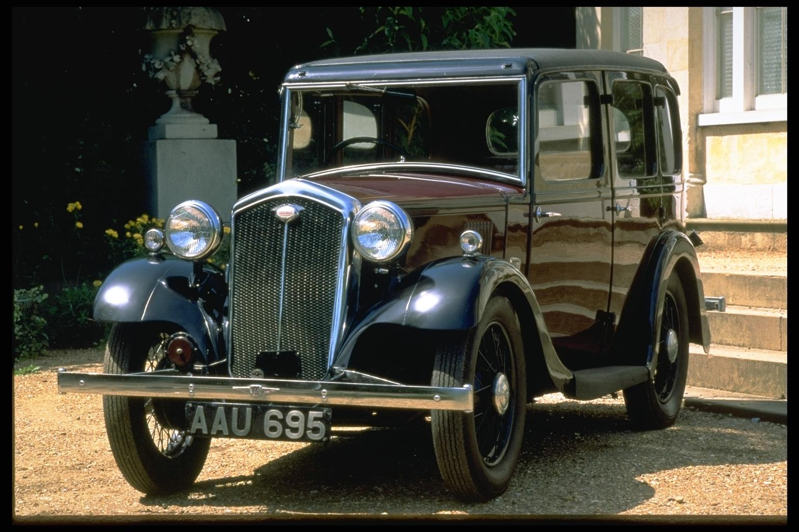

Amaliy ish №3.
Сахифага расм қўйиш учун IMAGE тегидан фойдаланилади. IMAGE теги фақатгина саҳифага расмларни жойлаштириш учун фойдаланилади. Расмлар саҳифаларни қизиқроқ ва тасавурга бойроқ қилиб кўрсатади. Демак расм қўйиш учун <image> тегини киритамиз ва src="" қўйиб қўштирноқ орасига расм олинадиган манзил кўрсатилади. Албатта width="" ва hight="" буйруқларида расмнинг кенглиги ва баландлик параметрлари кўрсатилади. алт="" тегидан фойдаланиб расмга изоҳ ёзиш мумкин. Пастдаги расмда шу расм ва унга мос кодлар кўрсатилган.
<img src="расм/с:6-05.jpg" alt="6-05 гурухи талабаси Eshmatov X. " width="250" hight="236">
<img src="расм номи">
Масалан: <img src="image.jpg">
Агар расмли папкалар кўп бўлса у холда
<img src="../папка номи/ расм номи ">
Масалан: <img src="с:расм/image.жпг">
Бошқа сайтлардан хам расм олиш мумкин.
<img src="сайт/расм ёки сайт номи/папка/расм номи">
Bunga quyidagi misol bola oladi.
